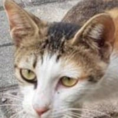
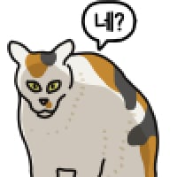

애기냥이 삐죽삐죽 털 어쩌고.. 겁나 귀엽네ㅋㅋ
말투 어쩌고 시발
새끼좆냥 뭐 어쩌고 커엽 예아
차단하고 뭐 어쩌고
엄청 순하네
미묘네 미묘
삼색털뭉치
나도 뽀뽀하게해줘 ㅜㅜ
우리고양이 손님오면 먼저 달려가서 신원파악함ㅋㅋㅋ

고양이 모래(모래)

맛피자상이 고양이를 좋아하나보네
모래 ㅋㅋㅋㅋ
을집 스트릿출신 신입이는 나 겁나 무서워하던데 귀엽긴함
와 진짜 예쁘다
눈밑에 아이라인도 있네 ㄱㅇㅇ

애기라서가 아니라 진짜 귀엽네 엄마집 자주 가겠구만
쟤는 생긴게 몬가 좀 다르네
와 존나귀엽다...
자랑할만하네

크게 안하고 딱 저사이즈로만 키울 순 없나
아메리칸컬
2~6개월이면 저 시기 끝남
진짜 졸귀탱이다..
화장실 모래가 진짜 모래야ㅋㅋㅋㅋㅋㅋㅋㅋㅋ
삼냥이 젤 좋다
줏어>주워
졸라귀엽네
ㅈㄴ 예쁜앨 주웠네 ㅅㅂ
하잉기여어 히잉
